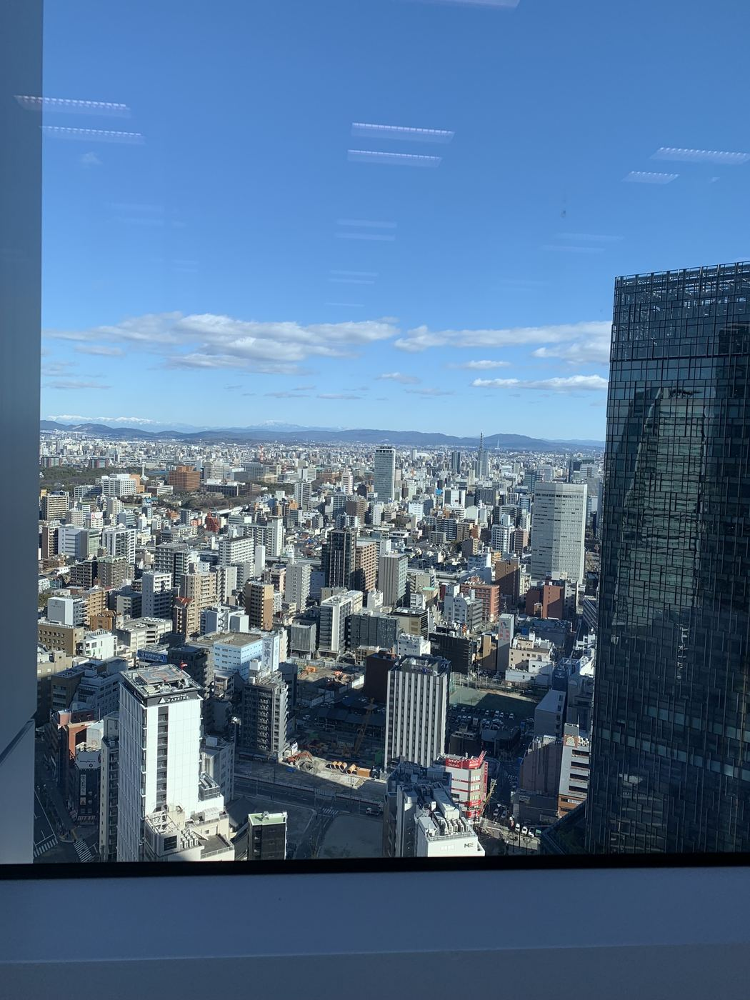

← Back to Home
My Day in Nagoya
I captured this view from a high-rise observation area in downtown Nagoya. The city stretched beneath me in a tightly-packed grid of buildings, with mountains visible on the horizon and a calm blue sky above. It was one of those clear afternoons where the details of the citystand out — the rooftops, small parks, and glass towers reflecting the light.
Add your personal story here: how you reached the skyscraper, what you felt seeing the city, and any tips for visitors.
Practical details
- Location: Nagoya, Japan
- Photo: nagoya-skyline.jpeg (original)
- Date: add the date you took the photo